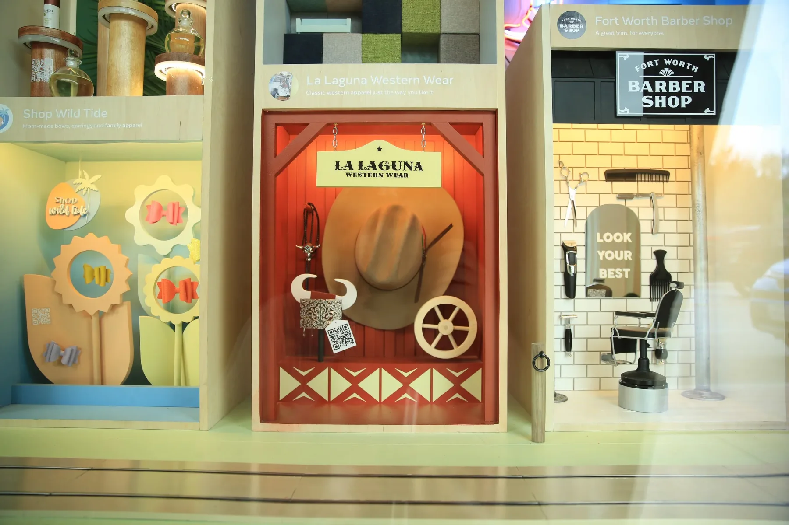
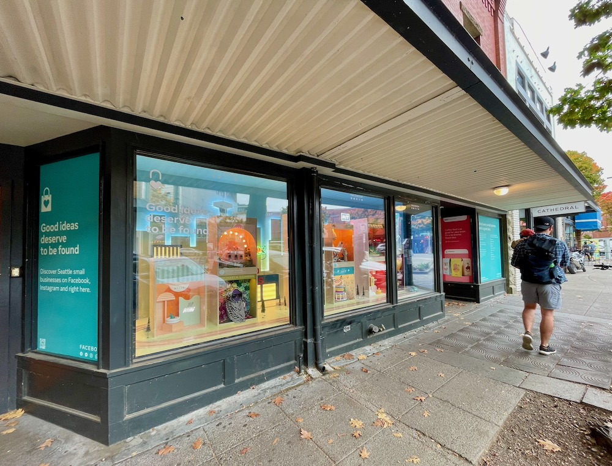
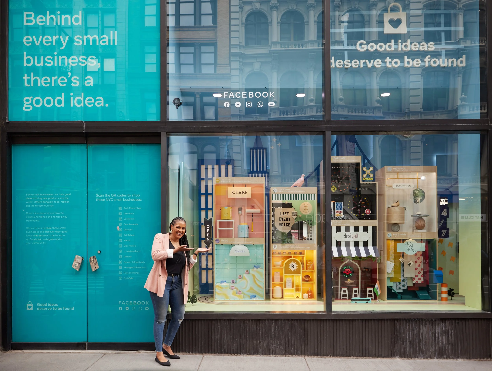
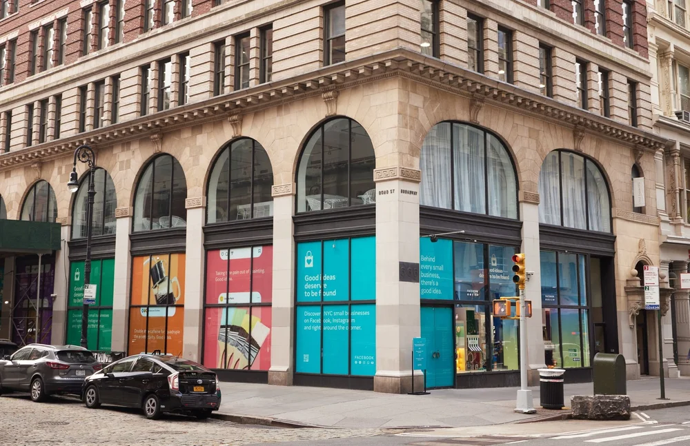
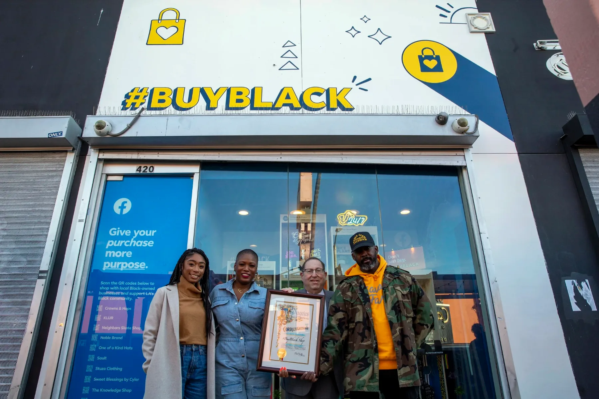
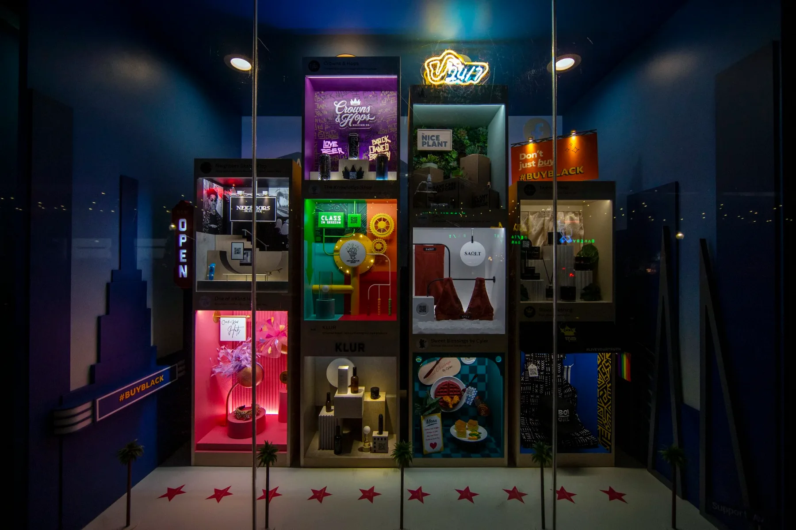
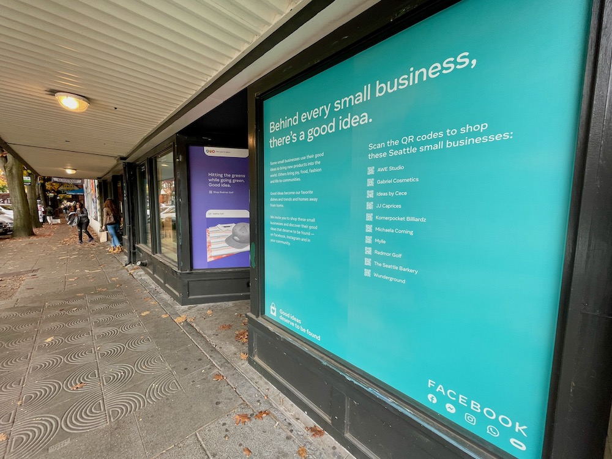
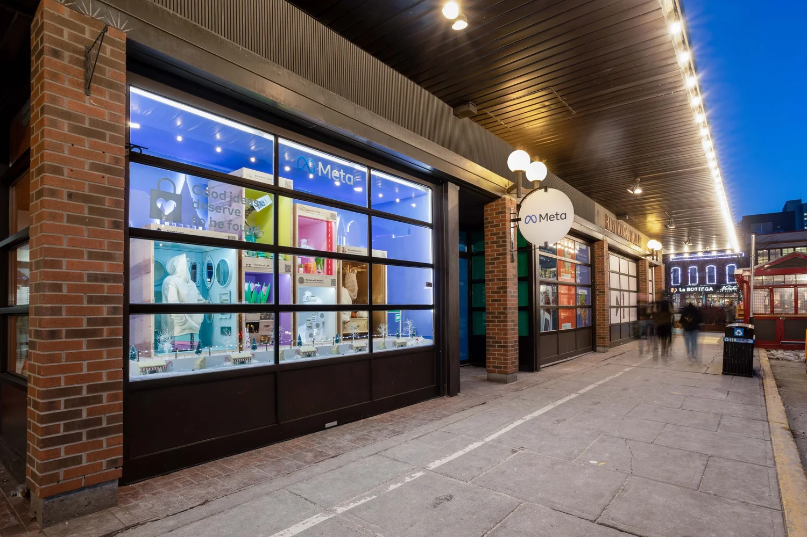
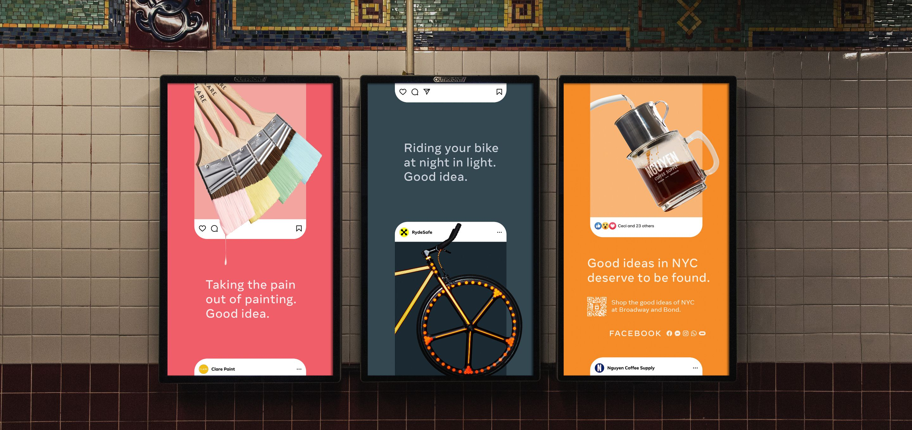

Meta, 2021 · Sr. Project Manager, Social & Economic Impact | Global Marketing
Good Ideas Shop
I inherited this one mid-concept, from a PM it had already broken. It had every resource it needed: leadership, budget, people. And no alignment on what it was building.
A short sizzle reel explaining the concept and purpose of the Good Ideas Shop e-commerce windows.
The situation
Meta wanted to prove that "good ideas deserve to be found" was more than a tagline: empty storefronts in three cities, turned into shoppable windows for 30+ local small businesses, with OOH, influencers, and an e-commerce surface behind it. It was already in progress, staffed, funded, backed by senior leadership, and going sideways anyway.









My role
I inherited this from a PM it had already broken, and found a program with no shortage of anything except agreement. Nobody had defined who owned what, several elements had never been executed by anyone on the team, and the creative lead was spending her days on fires she had no structural ability to prevent. What happened because I was there is a well-resourced program with three competing visions became one shipped program in three markets. And the structure I built to do it was extended to other advocacy work that followed.
What I did
Diagnosed before I touched anything. Read every program document to understand the goals as written, then sat with every discipline and asked two questions: what's working, and what isn't working at all. The program didn't need my opinions in week one. It needed someone to establish what was actually true.
Replaced firefighting with a rhythm. Instituted daily team meetings and a daily hot list with resource-specific tasks and deadlines. Status stopped being a thing people speculated about, which is most of what turmoil actually was.
Gave the creative team ownership instead of hours. Restructured the creative org to distribute ownership of workstreams at both the resource and deliverable level, then wrote a RACI. And socialized it, which is the step people skip and the reason RACIs usually die in a folder. The creative lead got to lead instead of triage.
Fixed the production partner rather than escalating them. A key production partner was under-delivering against creative expectations, which meant internal creatives were absorbing the gap and getting spread thinner. Replacing a partner mid-production wasn't a real option, so I partnered with our experiential manager to define their role, plan, approach, and timeline with them. The relationship came out of it stronger than it went in.
Meta Good Ideas Shop, award submission sizzle reel

What happened
Delivered in all three markets, Oct 12 through Black Friday and Cyber Monday
34 small businesses activated against a goal of 30
93MM+ ad impressions across 382 OOH, print, and digital placements
Influencer campaign at 2.6× its goal: 1.5MM impressions against a 573K target, 4.86% engagement vs. a 4.22% partner benchmark, and IG Reels relevancy at 43.91% against a 12% benchmark
SMB sentiment was the real signal: of the participating businesses surveyed, 96% said Meta helps them grow, 91% wanted to do it again, 70% planned to advertise within three months
Positive local press in Seattle and Fort Worth, earned during the Facebook Files news cycle, which is a harder thing than it sounds
Phase two kicked off while phase one was still transitioning into production, and ran with the learnings already applied
The structure outlived the program and extended to international advocacy activations (Canada), and the program is still running in the U.K.
I'd rather find the orphan work while it's a question than meet it as a fire.
What I'd do differently
My own notes from this say "define roles and responsibilities at kickoff." I don't think that's the real lesson anymore. At kickoff you can only assign the roles you can imagine. And this program had elements nobody on the team had ever executed. Nobody forgot to assign someone to manage the small businesses in the windows; nobody knew that was a job until the small businesses started emailing. Same with the OOH mechanicals (internal design or the production partner?) and with who vetted placements. That work wasn't misassigned. It was orphaned, and it surfaced the way orphaned work always does: at the moment it became a problem.
So a better kickoff RACI wouldn't have caught it. What catches it is treating the RACI as a living document and asking one question on a schedule: what showed up this week that nobody owns?
Press

GeekWire
Facebook uses a Seattle storefront loaded with QR codes to drive offline shoppers to online businesses
GeekWire Photo / Kurt Schlosser

GeekWire
Wunderground: “We found out today that we are one of the most scanned QR codes so far.”
GeekWire Photo / Kurt Schlosser
Local coverage in Seattle. Fox 4 also covered the Fort Worth window; that clip is pending.
Previous: Design System Migration
Next
Helmets for Habitat
Both creative leads gone within weeks of greenlight, and a partner with no execution plan.